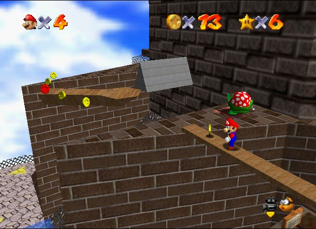
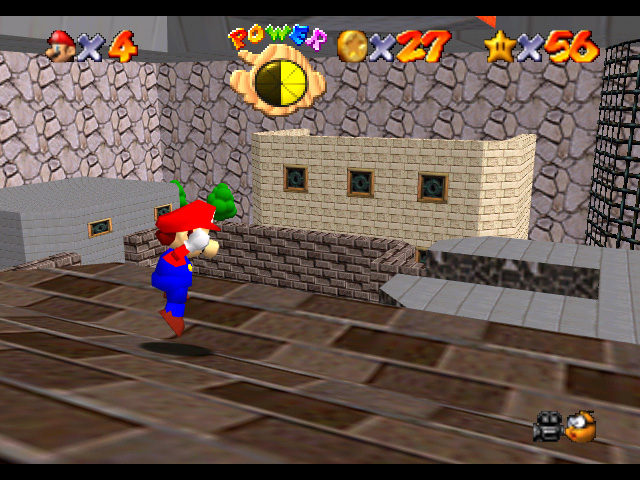

Overview
Now with 5000% more explosions

Super Mario 64 was made in 1996 for the Nintendo 64 home console. The game was the first to pull off 3D open world exploration well, and sold very well. It's impact on the industry and the people in it is well known and inspired companies like iD Software and Valve to explore 3D worlds.
Despite it's age, it holds up very well today, and even had a remake made as a launch title for the Nintendo DS made in early 2005.
A true classic among fans of multiple generations, it has people in it's grasp scrambling to find extras hidden it's vast open worlds.
Gameplay
As with the Nintendo 64 Collect-a-thons of the time,he game focuses on exploring a wide range of levels, each with their unique atmospheres and themes. Beating each mission on each level requires knowledge of the layout of each level. It helps to explore as much as possible before tackling certain missions, just so you have an idea on how to get to specific areas with relative ease.
This style adds a bit of charm to the game. The free open world aspect makes this a great game to just put in and wander aimlessly about if you so chose. This also makes it a great game for younger audiences, because it isn't constantly forcing a task on them. They're free to move about and explore as much as they want, and pick up things along the way.